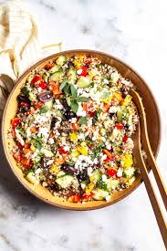
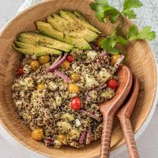
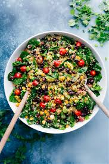
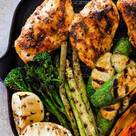
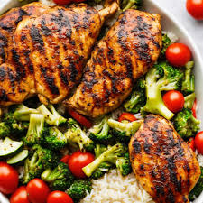
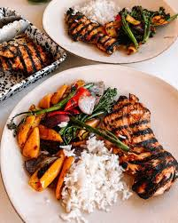
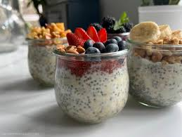
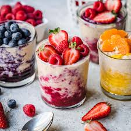
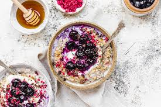

Explore Our Healthy Recipes
Discover tasty and nutritious recipes to help you maintain a healthy lifestyle. Try these simple dishes to add variety and health benefits to your meals!
Recipe 1: Quinoa Salad
- Ingredients: Quinoa, cherry tomatoes, cucumbers, red onion, feta cheese, olives, lemon juice, olive oil, salt, and pepper.
- Instructions:
- Cook quinoa according to package instructions and let it cool.
- Chop cherry tomatoes, cucumbers, and red onion.
- Mix all ingredients in a large bowl.
- Add feta cheese and olives.
- Drizzle with lemon juice and olive oil, and season with salt and pepper to taste.



Recipe 2: Grilled Chicken with Vegetables
- Ingredients: Chicken breasts, bell peppers, zucchini, olive oil, garlic, dried herbs (e.g., thyme, oregano), salt, and pepper.
- Instructions:
- Preheat grill to medium-high heat.
- Season chicken breasts with olive oil, minced garlic, dried herbs, salt, and pepper.
- Grill chicken for 6-7 minutes per side, or until fully cooked.
- While chicken is grilling, toss bell peppers and zucchini with olive oil, salt, and pepper.
- Grill vegetables for 4-5 minutes per side, or until tender and slightly charred.
- Serve grilled chicken with vegetables on the side.



Recipe 3: Overnight Oats
- Ingredients: Rolled oats, almond milk (or any milk of choice), chia seeds, honey, fresh berries, and nuts (optional).
- Instructions:
- In a jar or container, mix rolled oats with almond milk and chia seeds.
- Stir in honey for sweetness.
- Cover and refrigerate overnight.
- In the morning, top with fresh berries and nuts if desired.



Looking for more healthy recipes for weight loss? Check out this collection of Healthy Recipes for Weight Loss from BBC Good Food.